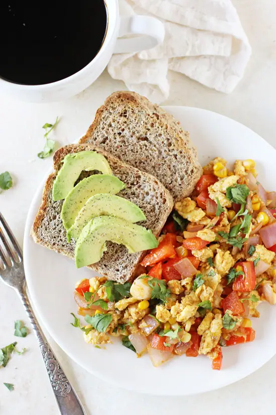
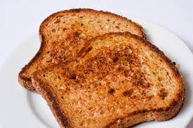
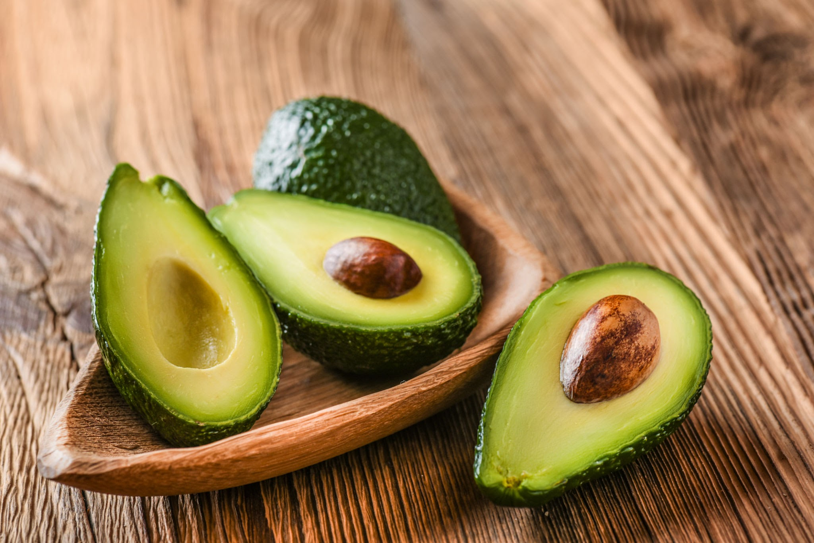

Breakfast
Here's an example breakfast meal:
-
Scrambled eggs
Eggs have been a dietary staple since time immemorial and there’s good reason for their continued presence in our menus and meals. One large boiled egg has about 77 calories and contains: Vitamins A, B5, B12, D, E, K, B6 Folate Phosphorus Selenium Calcium Zinc Six grams of protein Five grams of healthy fats “Eggs are a good source of protein (both whites/yolk). They also contain heart-healthy unsaturated fats and are a great source of important nutrients, such as vitamin B6, B12 and vitamin D,” says Kurt Hong, MD, an internal medicine specialist at Keck Medicine of USC.
 -
Whole wheat toast
Whole wheat bread offers a number of heath benefits, from boosting digestive and heart health to lowering the risk of several serious conditions.
- Promotes Healthy Digestion
- May Reduce the Risk of Digestive Cancer
- Boosts Heart Health
- May Reduce the Risk of Type 2 Diabetes 
Avocado slices
Avocados are a source of key nutrients, including healthy fats and fiber. They also contain anti-inflammatory and antioxidant compounds and may help reduce heart disease risk.
- Beneficial for gut health
- May help reduce heart disease risk factors
- A rich source of antioxidant and anti-inflammatory compounds
- May help promote a healthy body weight 
Fruit salad
Fruit salad is a dish consisting of various kinds of fruit, sometimes served in a liquid, either their juices or a syrup. In different forms, fruit salad can be served as an appetizer or a side salad. When served as an appetizer, a fruit salad is sometimes known as a fruit cocktail, or fruit cup.
- Weight loss
- Healthy nutrition profile
- Improved digestion